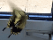
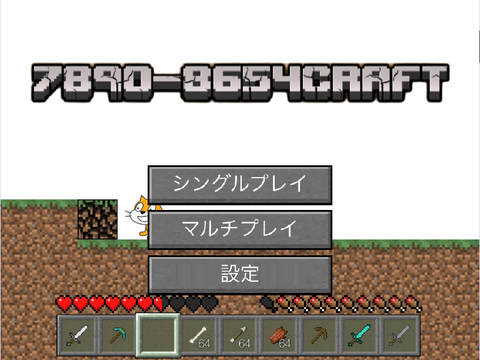
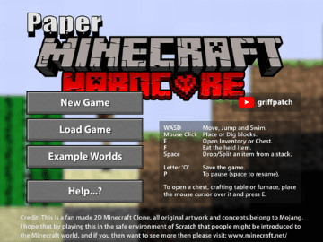
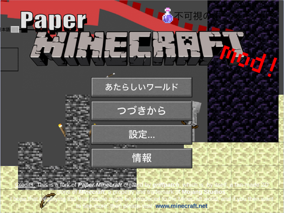

7890-8654公式ホームページ
7890-8654の自信作一覧!
7890-8654CRAFT!

⭐︎このプロジェクトの説明
- オンラインで出来る自作のマインクラフトみたいなものです｡(オンラインでやるにはscratchアカウントが必要です｡アカウントを持っていない人は ここをタップしてください｡)決して他の人のプログラムをコピーしていません｡つまりプログラムは自作ってことですね｡はい
友達を招待して遊びましょう｡
基本的な操作
矢印キー:移動
「t」:チャット
「/」:コマンド(チート権限があるプレイヤーのみ
paper minecraft heardCore mod!

⭐︎このプロジェクトの説明
- griffpatchさんのをリミックスしたプロジェクトです｡ハードコアモードをオンにした状態にすると生きた日数が表示されます｡
この状態で死ぬと スペクテイターモードになり生き返れなくなります｡そこだけご注意ください｡
paper Minecraft ver.最新

⭐︎このプロジェクトの説明
こちら